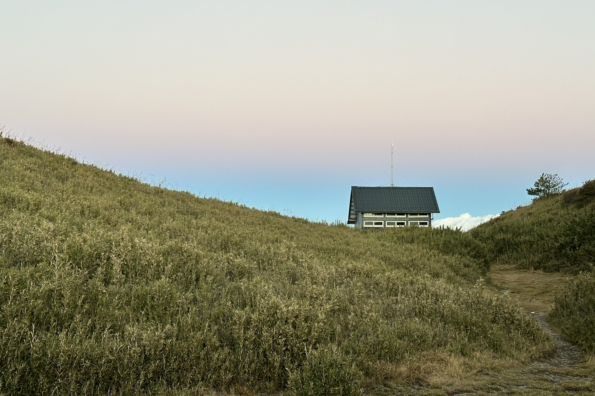

志雪線

志雪線
日期：2026年11月05-06日（兩天一夜）
【Day01】
0500 起床換衣服
0520 出門、水煮蛋75kcal
0529 浮洲火車站
0532 板橋火車站
0554 板橋火車站（普悠瑪402）
全家-大鮮肉包290kcal
香烤骨腿212kcal
0600
Body Goals 豌豆蛋白飲Pro-濃芋歐蕾159kcal、無糖豆漿150kcal
試著用「國家公園登山報到APP」報到，結果發現沒辨法用護照號碼報到，下次入山還是用居留證好了。因為沒辨法線上報到，只能透過信箱投遞紙本的方式，趕忙在便利商店列印入山證。
0713 宜蘭火車站
0730 宜蘭轉運站（國光客運1751）、要提早10分鐘取票
0757 想說要來吃個暈車藥，結果發現暈車藥只有帶一顆，那留給回程好了
0900 預防性服用丹木斯125mg
0917 南山部落，中停10分鐘上洗手間
1019 坐車的時間好漫長，皮革的味道讓我有點暈車，所幸只剩二十分鐘而已。
1041 中興路口、711補給、帶隱眼、排便
1046 鮪魚飯糰231kcal
1058 中興路口711出發
1126 四季蘭溪吊橋
1147 大太陽，蠻熱的
1157 3.1K溪邊補水，看到野豬屁屁，但跑太快來不及拍照。
科克蘭花生巧克力口味蛋白棒203kcal
1206 續行
1223 摘隱眼
1324 科克蘭 花生巧克力口味蛋白棒101kcal
1351 4.6K
BF海鹽檸檬糖 9.3
1358 科克蘭 花生巧克力口味蛋白棒101kcal
1419 休
捷克EMCO無加糖可可椰子燕麥穀片100kcal
1425 續行
1501 賽良久營地
捷克EMCO無加糖可可椰子燕麥穀片100kcal
1511 續行，天氣變涼了，帶頭巾
腳麻，疑似丹木斯副作用(?)
1535 腳麻症狀消失
科克蘭 花生巧克力口味蛋白棒101kcal
1551 科克蘭 花生巧克力口味蛋白棒101kcal
續行以後明顯感覺到肌力下降，開始需要抓點東西來穩定身體，也有可能是我走太快。
1616 瓢簞山屋C1=W1包場，水塔有水
1628 留守回報：天氣多雲。翠池無水，水補給點為瓢單山屋水桶及雪山南峰舊址營地。
訊號好到可以自己看Windy，還可以傳照片。
衣物：襪子、羊毛底層、刷毛中層、風雨衣、登山褲、雨褲、頭巾、毛帽
1648 晚餐800kcal
1720 穿羽絨衣
1736 美祿82kcal
1749 PAC檢測、PAC充氣到洩氣約5分30秒
1812 山屋外
1824 山屋，依舊沒有燈，似乎就是沒有燈了。
發現自己沒有帶安欣癢，難過，出門應該再檢查一次醫藥包；有坐長途車的話，還是要帶一下暈車藥。
精神煥散的時候，不一定是累，有可能是身體脫水，補點水精神就會回來了，百試百靈。
1912 山屋外。Windy顯示8度，蠻冷的。上半身還好，褲子有點不夠，外露的手很冷，寒氣會穿透我的衣服，我還是回去我溫暖的窩好了。如果想要溫暖地呆著外面，感覺可以多備一條羊毛打底褲跟手套。
這裏訊號好到我以為我在郊山。
2350 上廁所
明明在山屋裏，卻感覺風一直灌進來，越睡越冷，腦袋被風吹到頭痛。後來發現有窗戶沒關好，把窗戶關好之後好多了。不過後面都沒有睡得很好，總是睡睡醒醒。
3.1K溪底以後一直到瓢簞山屋才有上廁所，補水可能太少。
行動糧（含早餐）約1776kcal
總熱量2658kcal
四季蘭溪吊橋-瓢簞山屋
上河時間525分鐘
行進時間290分鐘
上河0.56
背負（含水2-3L）11-12kg